Step 6: Code Verification
Contents
Introduction
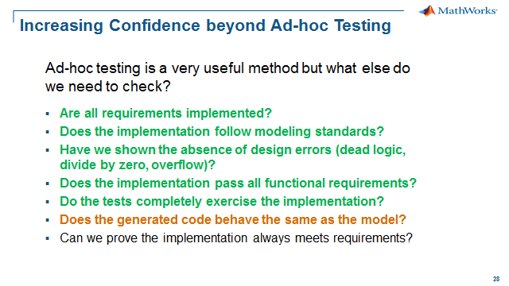
Some of this step will be instructor led since it requires Embedded Coder, Visual Studio, and the Bullseye code coverage tool. If you have any of these tools then please execute the steps described below on your computer.
Now that we have gone through examples on how to perform various verification and validation activities on our model, let’s move to code generation and source code unit testing.
Equivalence testing is a method to compare the behavior of your model to the behavior of your generated code. Software-in-the-Loop (SIL) testing is a method to ensure the behavior of the generated code, compiled for the host, matches that of the model. This verification technique is built into Simulink such that you easily can rerun all the test cases used for the model on the generated source code. This adds additional confidence and reliability to our development process.
We could also extend the idea of SIL to Process-in-the-Loop (PIL), in which case we would compile the code and run it either in an IDE or on a target processor. This verification technique is also built into Simulink such that you can automatically call 3rd party IDEs and compilers to build, download and execute the generated source code on the target processor. PIL is often required for compliance with functional safety standards like IEC 61508, ISO 26262, EN 50128, etc.
Below is a summary of the equivalence testing for code verification:
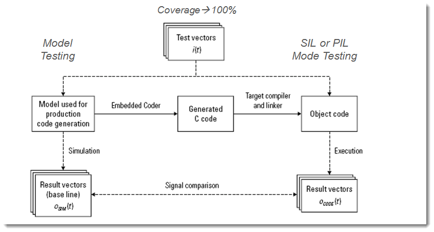
Verification and Validation Tools Used
- Model Verification Blocks (part of Simulink)
- Embedded Coder (C code generation)
Equivalence Testing -- Model vs Code Outputs
Before performing the Software-in-the-loop (SIL) verfication, we should verify that the model behaves as expected, i.e. the outputs from the Test Unit macthes the expected outputs. To verify this, do the following:
1. Clear any runs in the Simulation Data Inspector, run the following command - or click here.
>> Simulink.sdi.clear;
2. Open the CruiseControl_SIL_harness.slx model – click here.
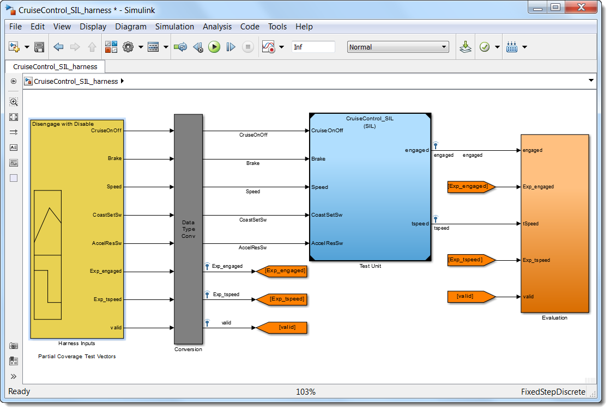
3. Open Signal Builder and click Run All.
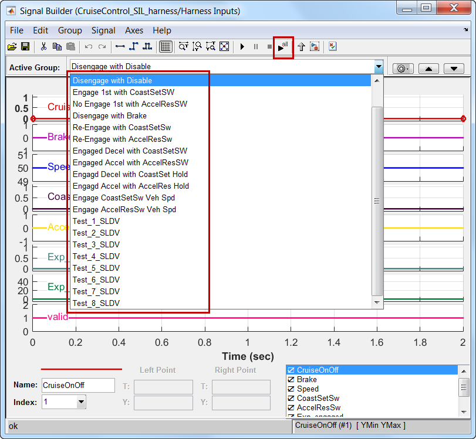
All test cases inside the Signal Builder block are now executed in sequence. During simulation we are using assert blocks to verify that the outputs from the Test Unit block are equal to the expected outputs. Since no assertions were triggered, all test cases were passed. In addtion, we measured the model coverage for these test cases, which resulted 100% coverage (see picture below).
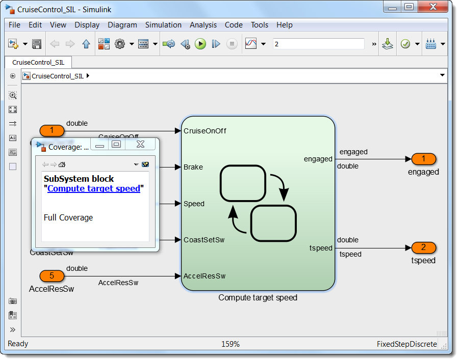
The Test Unit was now executed in Normal mode, i.e. normal simulation. However, the Model block, which references CruiseControl_SIL, can be executed in the following modes of operation:
- Normal
- Accelerator
- Software-in-the-loop (SIL)
- Processor-in-the-loop (PIL)
In order to verify that the generated code (compiled for the host) has the same behavior as the model, we can simply switch the simulation mode from Normal (default) to Software-in-the-loop (SIL), rerun all the test cases and compare the results. This is what we are going to do now.
4. Right-click the Test Unit block. Select Block Parameters (ModelReference).
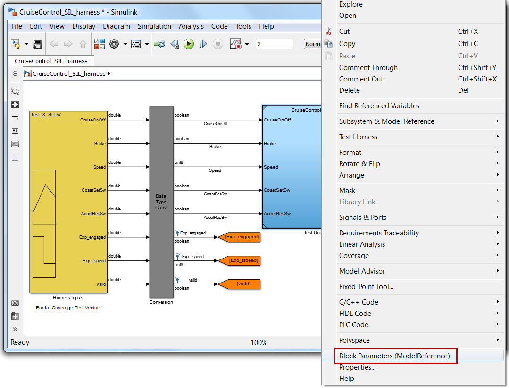
5. Select Software-in-the-looop (SIL) as Simulation mode in the drop-down list in the dialog that appears (see picture below).
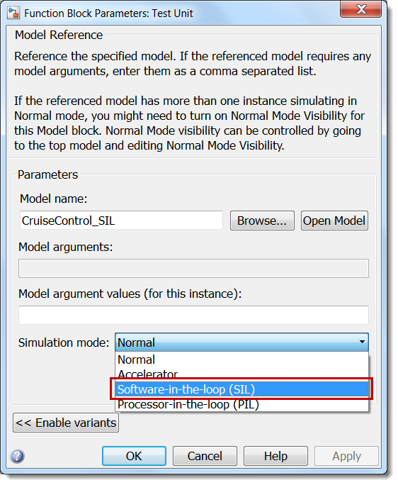
6. Click OK.
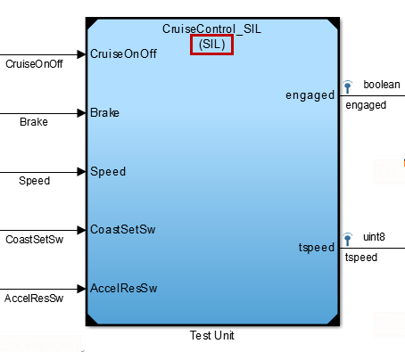
The Model block (Test Unit) is now configured to run CruiseControl_SIL model in Software-in-the-looop (SIL) simulation mode (see picture above). This means that before simulating the CruiseControl_SIL_harness model, Simulink will generate code and compile it for CruiseControl_SIL and execute the compiled code instead of the model.
To perform the Software-in-the-loop verification, do the following:
7. To disable model coverage for SIL, run the following command - or click here.
>> disableModelCoverage('CruiseControl_SIL_harness');8. Open the Signal Builder block. Click Run All.
Code is now generated and compiled for the Test Unit and then all test cases inside the Signal Builder block are executed in sequence. Again, we are using assert blocks to verify that the outputs from the Test Unit block in SIL mode (i.e. the compiled source code) are equal to the expected outputs. Since no assertions were triggered, all test cases were passed. This means that the generated source code (compiled for the host) has the same behavior as the Simulink model.
Manually compare model vs code in SDI, doing the Equivalence Test manually for a few runs:
9. Open Simulation Data Inspector.
10. Use the "Compare Runs" function to manually compare the model outputs to the SIL outputs. (They are offset by the number of test cases, 22).
11. To automate the comparison, run the following command - or click here.
>> createEquivTestReport('CruiseControl_SIL_harness','CruiseControl_SIL',22);
Unintended Functionality -- Model vs Code Coverage
Next step is to check for unintended functionality that may have been introduced by the code generation process. Before we compared model vs code outputs, now we will compare code vs model coverage with with a third party code coverage tool. Using the same 100% model coverage test vectors in the harness, re-run the test vectors to determine code coverage with the 3rd party Bullseye code coverage tool. This will be instructor led since you most likely do not have Bullseye installed on your computer. To perform the SIL test with code coverage:
1. Open the CruiseControl_SILcvg_harness.slx model – click here.
2. Make sure SIL mode has been selected for the referenced model as before.
3. Select Code, C/C++ Code, Code Generation Options...
4. Select Code Generation, Verification
5. Select Code coverage tool as BulleyeCoverage
6. Select Configure Coverage
7. Uncheck "Code coverage for this model (CruiseControl_SILcvg_harness)
8. Check "Code coverage for referenced models"
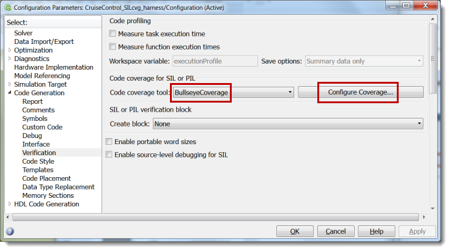
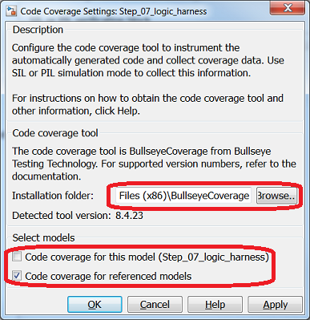
To perform the Software-in-the-loop verification with code coverage, do the following:
9. Open the Signal Builder block.
10. Select the first test, click Run.
11. In the Code Generation Report select CruiseControl_SIL.c under Model Files to view the code coverage results.
12. Select another test to run in Signal Builder to see the incremental contribution to the cumulative coverage for each test case.
13. Optionally, Run All in Signal Builder to see the cumulative coverage for the 100% model coverage test vectors
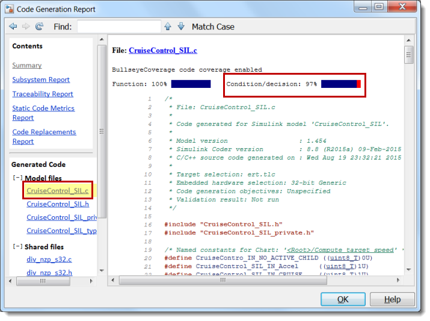
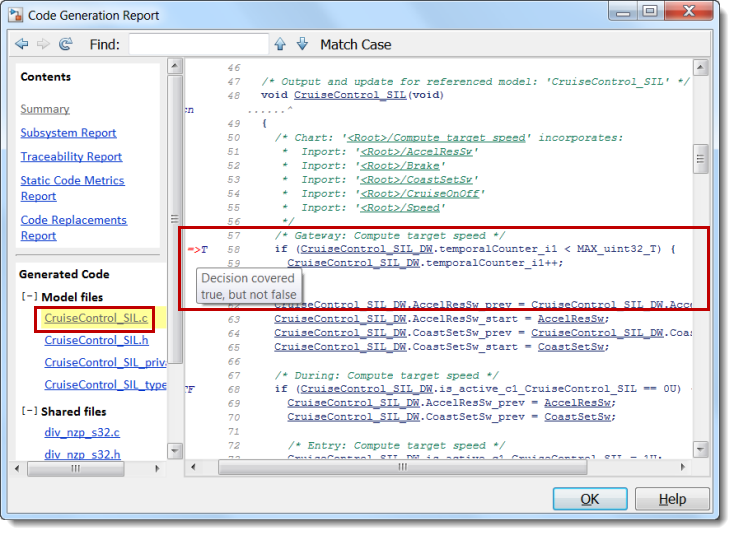
Source Level Debugging
Some of the code vs model coverage differences are due to the addition of a "default" case to the switch statement and others are due to "internal" entry decisions which may not be considered with model coverage. To further analyze differences, Embedded Coder has an integrated debugging capability to debug in Visual Studio while running a SIL mode simulation. To enable this functionality:
1. Open the CruiseControl_VS_harness.slx model – click here.
2. Select Code, C/C++ Code, Code Generation Options...
3. Select Code Generation, Verification
4. Select Code coverage tool as None
5. Select Enable source-level debugging for SIL
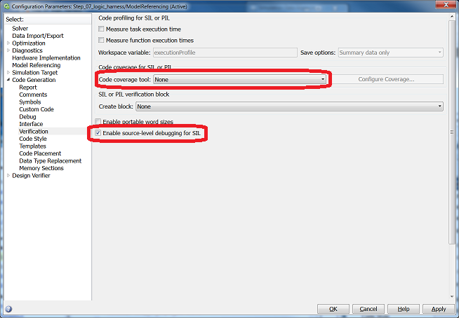
To perform the source level debugging:
6. Click Run to execute the selected test case
Once the code generation and build for the SIL block has been completed the simulation will begin with a breakpoint in the Init and then after a continue the simulation will encounter the Step breakpoint function.
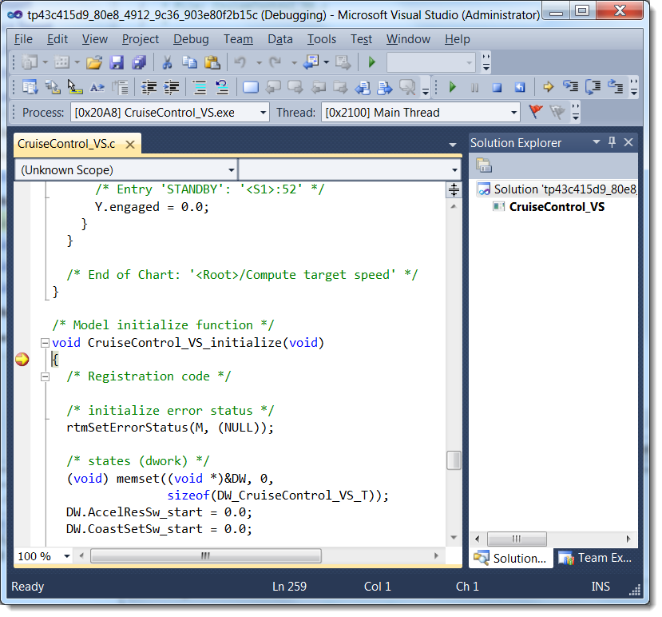
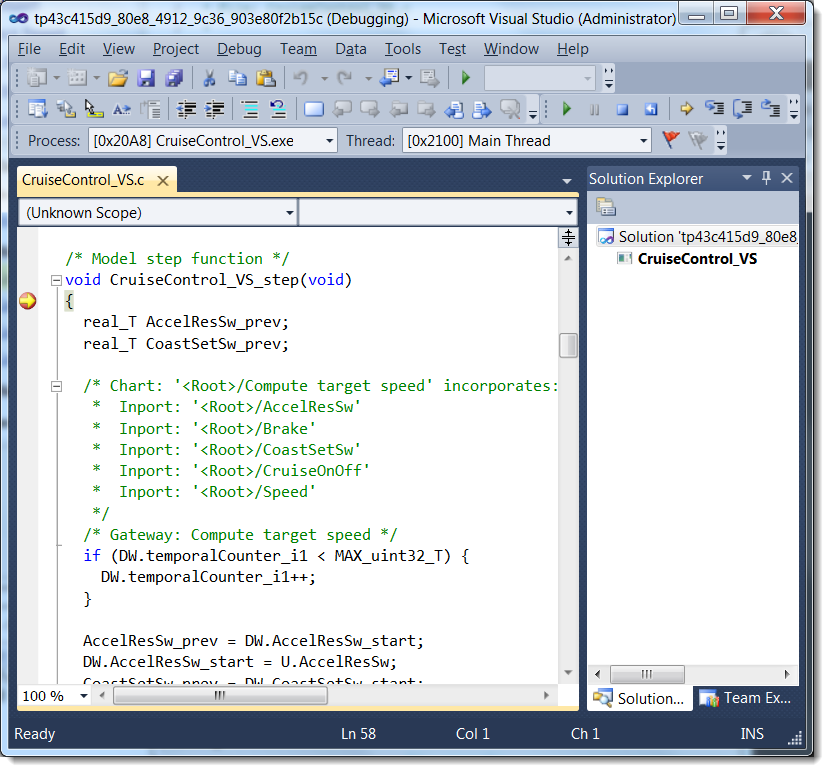
Use the Visual Studio debugging options to continue the simulation, add more breakpoints and watch variables. You can also click on a transition in the state chart and navigate to the code to know where to set a breakpoint in the code for a particular transition.
Let's add a few breakpoints in the code and test with our dashboard:
7. Set a breakpoint at line #120 to test the Brake after the Cruise Control is engaged.
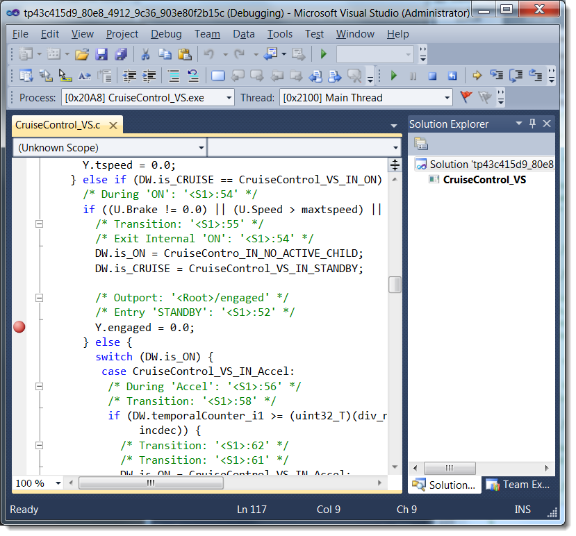
8. Set a breakpoint at line #224 to test the tspeed setting going from disengaged to engaged.
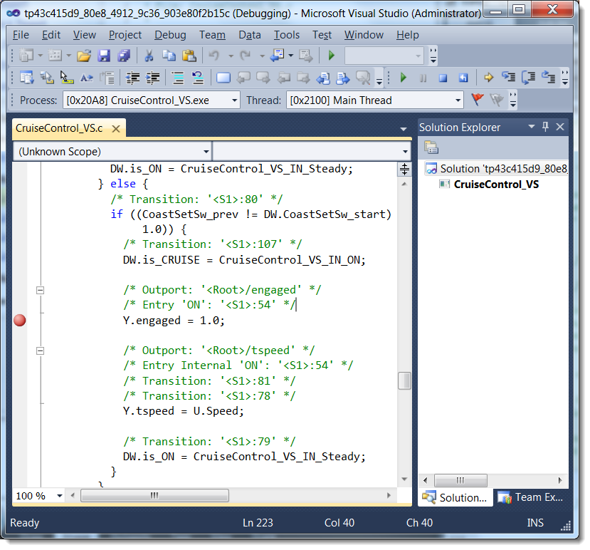
Summary
In this method we have shown a code verfication workflow:
- Re-used a test harness with 100% model coverage input test vectors
- Configured our implementation to run in Software-in-the-loop (SIL) mode
- Successfully compared SIL implementation outputs to the same model expected outputs
- Found minimal model coverage to code coverage differences
- Demonstrated how to debug source code in Visual Studio as another way to understand other differences
The Code Verification step of the process is about having confidence in our generated code by showing the code behavior matches the model behavior. The design issues were found earlier in the model verification tests. The code verification was shown to be tightly integrated with the code generation tool enabling minimal setup, high re-use of model test assets and easy execution/evaluation. We will answer the last question in the next step as we build upon our structured and formal testing framework for securing the quality, robustness and safety of our cruise controller.
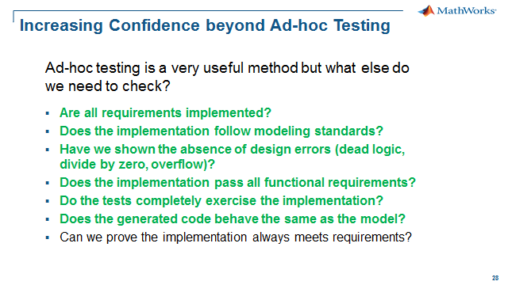
When you are finished, close all models and files - or click here.
Please go to Step 7: Property Proving - click here.